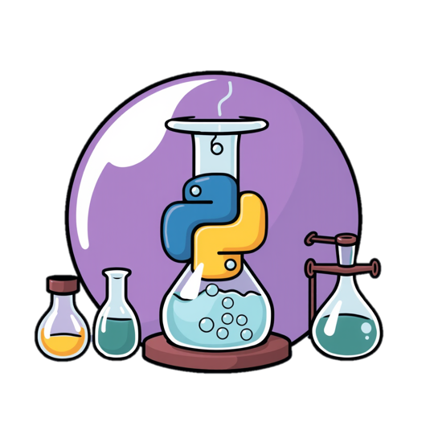

Welcome to 420-SN1 Programming in Science
In this course, you will learn everything about the basics of programming to solve scientific problems, read data from files, clean up the data, apply mathematical formulas, and more.
This image was AI generated.
This website provides you with additional notes and practice exercises that can help you better understand and master the concepts seen in class.
You can download a copy of the course outline here.